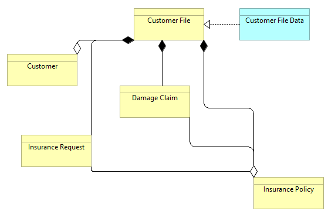

除了视图特定设置外，全局设置使用连接首选项选项卡中的正交连接锚可用于更改连接的绘制方式。
除了视图特定设置外，全局设置使用连接首选项选项卡中的正交连接锚可用于更改连接的绘制方式。默认情况下，连接被绘制为从对象到对象的直线。可以在此处详细说明将折弯点添加到连接中。但是，可以设置整体连接路由器类型，以便连接围绕对象路由或正交绘制。
可以从主“视图->连接路由器”菜单或通过右键单击视图或从 属性中的“外观”选项卡设置连接路由器类型选择视图画布时的窗口。
除了视图特定设置外，全局设置使用连接首选项选项卡中的正交连接锚可用于更改连接的绘制方式。
可用的路由器类型如下：
连接以直线绘制。用户可以添加折弯点。
手工路由器
连接是正交路由的。用户不能添加折弯点。
曼哈顿路由器 Manhattan Router